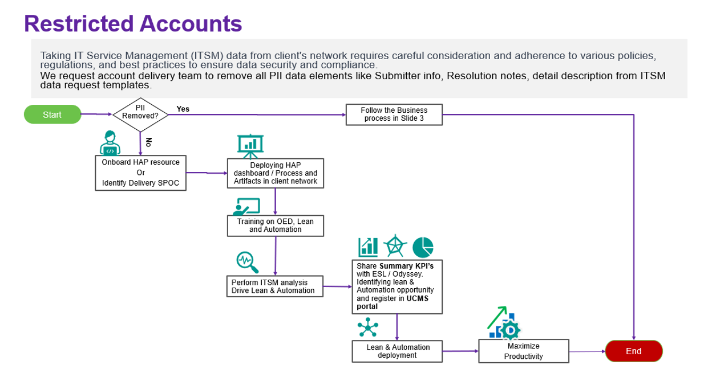

Efficiency Lever / Analytics
Insights from IT Service Management (ITSM) Data Analytics
ITSM data analytics plays a crucial role in optimizing service delivery, improving operational efficiency, and enhancing customer satisfaction. By harnessing the wealth of data generated within ITSM platforms, account delivery team can gain valuable insights into service performance, incident resolution, and resource utilization. In this analytics report, we explore key metrics, KPI comparison with Benchmark(Everest) and trends derived from ITSM data to drive informed decision-making and continuous improvement.
Data Collection: Our analysis encompasses a comprehensive dataset sourced from ITSM platforms, DXC horizon (time tracking) & PPMC comprising incident reports, problem report, service requests, change management records, DXC utilization reports and performance Metrics/KPI. Leveraging automated data extraction and transformation techniques, we processed and standardized the raw data to facilitate meaningful analysis.

Conclusion: ITSM data analytics provides invaluable insights into service performance, incident management, and resource utilization, enabling Apps SL account to optimize service delivery and drive continuous improvement. By leveraging advanced analytics techniques and embracing data-driven decision-making, account delivery team can enhance service quality, mitigate risks, and deliver exceptional customer experiences in an increasingly complex IT landscape.
Group_Name |
Document_Name |
Purpose |
Reference_Link |
|---|---|---|---|
| Operational- Excellence | ITSM Data Upload User Guide | Provides documentation about ITSM data upload into HAP data lake process for Account SPOCs |
1. Operational Efficiency PPT
2. Operational Efficiency ITSM DataLoad UserGuide 3. ITSM Extract data template 4. ServiceNow Ticket extract User guide |
| Account Onboarding User Guide | Explains the process of account onboarding to track operational KPIs | 1. Internal UserGuide | |